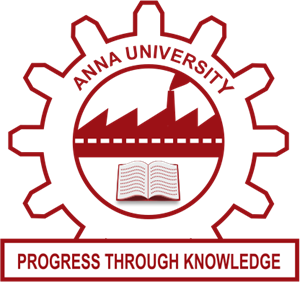

Education
-
Indian Institute of Technology Madras
Master of Science (by research) in Mechanical Engineering (2020)
-

Anna University, Chennai
Bachelor of Engineering in Mechanical Engineering (2017)
Experience
Current Activity
Presently, I am pursuing my masters in Mechanical Engineering at IIT Madras, under the guidance of Prof. Krithika Narayanaswamy. My current research involves understanding the oxidation kinetics of small ester fuels, and utilizing them to mimic the combustion of real biodiesel fuels.